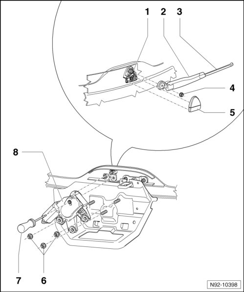

Rear Window Wiper System Assembly Overview
Rear Window Wiper System Assembly Overview

1 Wiper arm shaft with eccentric lever
2 Wiper arm
• Removing and installing --> [ Rear Window Wiper Arm ] Rear Window Wiper Arm
• Adjusting park position --> [ Rear Window Wiper Blade Park Position, Adjusting ] Rear Window Wiper Blade Park Position, Adjusting
3 Aero windshield wipers
• Removing and installing --> [ Rear Window Aero Wiper Blades ] Rear Window Aero Wiper Blades
4 Wiper arm nut on wiper arm shaft
• 12 Nm
5 Cap
• Note differences for vehicles through 01.05 and from 02.05 --> [ Rear Window Wiper Arm ] Rear Window Wiper Arm
6 Wiper motor mounting nuts to rear lid
• 7 Nm
7 Centering drift
• for centering the wiper motor when installing
• diameter 5 mm
• at least 75 mm long
8 Rear window wiper motor (V12)
• Removing and installing --> [ Rear Window Wiper Motor ] Rear Window Wiper Motor